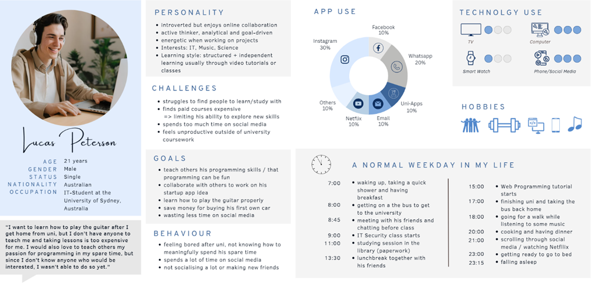
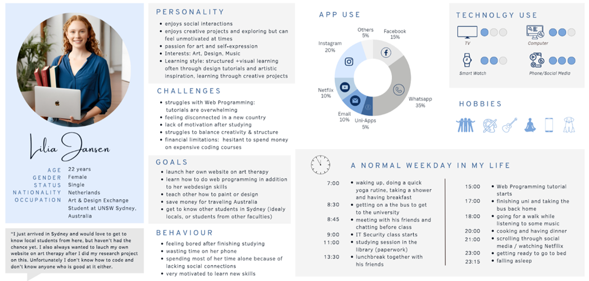

Students want to learn new skills
— but face three key barriers
The issue isn't lack of knowledge — it's lack of structure and accessibility.
Skill learning is often expensive
Students have limited access to affordable learning options.
Void of peer-to-peer & community-driven learning
Most existing platforms are built top-down.
Student knowledge remains unused
There is no system for students to share their knowledge.
Design a system that enables peer-to-peer learning, works without money & feels fair, trustworthy, and motivating
SkillSwap is a credit-based platform where students exchange skills.
Teach a skill → earn credits. Spend credits → learn a skill.
Skill search & smart matching
Find the right partner for every skill — with smart filters and peer-matching.
Community spaces
Collaborative project spaces where students can work and learn together.
Verified profiles & feedback
Trust through transparent profiles, ratings, and mutual feedback after sessions.
Non-monetary credit system
Teach to earn credits, spend credits to learn — no money involved.
Validated through research: Learning is shifting, but tools haven't caught up.
consider extracurricular skills crucial for a successful career
report significant skill gaps in their organisations
believe they need continuous training to keep up with the job market
actively want to learn new skills but lack accessible opportunities
prefer collaborative learning over traditional top-down approaches to education
have access to affordable training — the majority are left without options
University students — as both learners and teachers
Universities offer a wide variety of academic skills — a natural base for exchange.
Able to have video calls and use the app without much additional help.
Often similar limited income — paid learning is less accessible for students.
Already a very international community with similar English proficiency.
Help with classes, career, productive free time, and building connections.


The hardest problem was designing a system that feels:
fair, flexible & hard to exploit
A credit-based system replacing money with trust & contribution.
Credit Value
Based on time, effort, and skill complexity. Suggested ranges + user adjustment.
Earning Credits — Teach
Teaching skills generates credits for the teacher.
Spending Credits — Learn
Credits required to book sessions. Only affordable options shown.
Validation
Mutual confirmation required. Time delays prevent cheating and abuse.
To ensure long-term sustainability, we designed a hybrid business model
Subscriptions
Premium Version — no restrictions. Free Version — limited exchange, offers and participation.
Partnerships & Sponsorships
University support to recruit future users. Company interest in future employees. Community & crowd funding.
In-app Promotions & Vouchers
Financial support from featured partners. Voucher store for users to spend credits on app partners.
From Idea to Interface
A continuous iteration across fidelity levels — validating each step along the way
Usability Testing
We ran structured usability tests with target users on our LoFi prototype. Participants completed key tasks while we observed pain points and confusion — surfacing 7 critical issues before committing to high fidelity.
- Unclear verification process
- Missing filtering & availability details
- Unclear chat & video call system
- Missing report & legitimacy control
- Missing credit system information
- Chaotic sorting of collaboration projects
- More simple, user-friendly & clear design needed

Field Study & Interviews
In-depth interviews and field observations with university students revealed real learning behaviors, barriers, and motivations — directly informing our persona development and credit system design.

Heuristic Evaluation
We evaluated the interface against Nielsen's 10 usability heuristics. Issues with feedback visibility, error prevention, and consistency were identified and addressed in the next iteration.

Expert Reviews
External design experts reviewed the MVP and provided targeted feedback on interaction patterns, visual hierarchy, and the credit flow — leading to final refinements before submission.

The key features of our final product
- Search and filter for skills to learn
- Smart peer-to-peer matching
- Add own skills as teaching or service offers

- Connect while distributing different skills
- Join existing projects with your own skills
- Create your own projects for others to join

- Created during signup, regularly updated
- Skills, Projects, Credits, Feedback & Ratings
- Visible to all other users

Additional Features


Ideation, Creation, Iteration — with regular peer feedback during weekly design crits
- Mindmaps on Miro
- Literature Research
- Problem Statement
- Goal & User Assumptions
- Credit System & Business Model
- Hypothesis & Subhypothesis
- User Group & Personas
- Example Scenario
- Reference Products
- Solution Concept & App Flow
- Sketches
- Wireframes
- Low Fidelity Prototype
- Mid Fidelity Prototype
- High Fidelity Prototype
- Interactive MVP
- LoFi: Usability Testing
- HiFi: Field Study incl. Interviews
- Heuristic Evaluation & Thematic Analysis
- Expert Feedback
How I contributed to the final result
Problem Statement, User & Business Assumptions, Hypothesis + Subhypothesis, Action Video Acting
What this project taught me about design
Trust over control
The hardest UX challenge wasn't the interface — it was designing a system where people trust strangers enough to exchange skills. Fairness had to be felt, not just stated.
Research changes everything
Our LoFi testing surfaced 7 problems we hadn't anticipated. Each iteration made the product fundamentally more usable — not just visually refined.
Constraints fuel creativity
No money, no top-down structure, no existing model to copy. Working within these constraints pushed the team to design something genuinely novel.
Community is the product
The app is only as good as its users. Designing for motivation, trust, and connection — not just task completion — was the real design challenge.
Where SkillSwap could go next
With a validated MVP and real user feedback, these are the most promising directions for the next development phase.
AI-powered matching
Smart recommendations based on learning history, availability, and skill compatibility — beyond manual search.
University partnerships
Official integration with course catalogues and university platforms to verify academic skills and extend reach.
Skill certification
Badges and verified certificates earned through teaching — shareable on LinkedIn and CVs to reward contribution.
Group sessions & events
Expand beyond 1-on-1 exchanges to workshops, hackathons, and skill-sharing events within the community.
Beyond universities
Extend the platform to young professionals and lifelong learners — keeping the non-monetary credit model.
Accessibility & localisation
Multi-language support, screen reader optimisation, and cultural adaptation for global student communities.